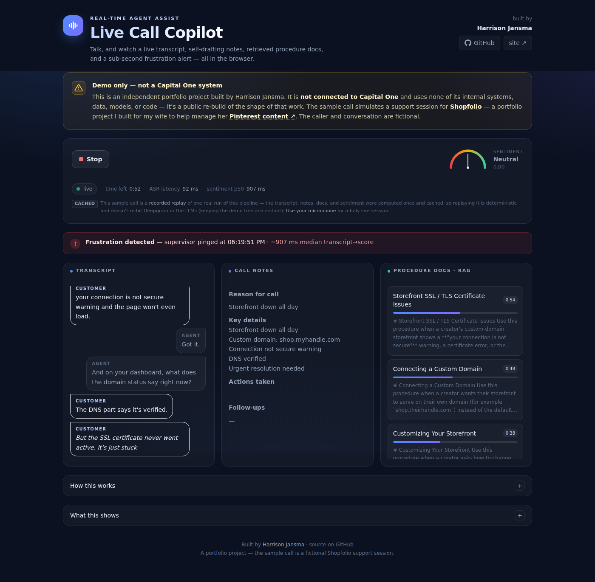

Generative AI and real-time NLP augmenting thousands of contact-center agents, credit models decisioning loans at large scale, and the earlier research and big-data work that got me there.
A public rebuild of the shape of the systems below, running live in your browser. Talk into your mic — or play a sample call — and watch a two-voice transcript, self-drafting notes, RAG-retrieved procedure docs, and a sub-second frustration alert. Deepgram + OpenAI composed into a real-time product; no proprietary anything.

Live, LLM-powered systems augmenting thousands of contact-center agents at Capital One.
Models that decision loans at large scale in auto lending.
Where I sharpened the fundamentals — research, big data, and NLP.
Want the full detail, with dates and stack?
View my résumé